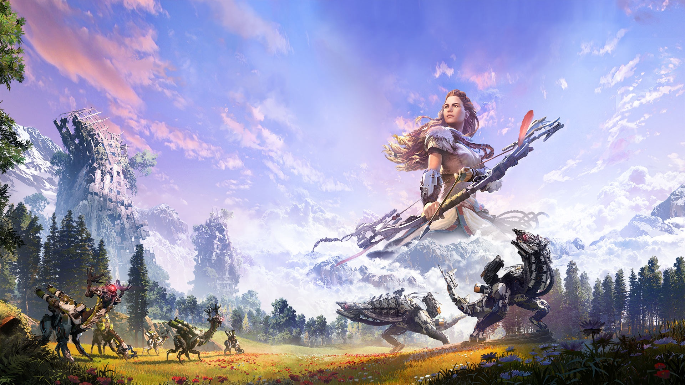

¿Que es Horizon?
Horizon es una saga de videojuegos desarrollados por Guerrila Games (Killzone), en esta saga nosotros controlamos a Aloy, una mujer que se embarca en una aventura para descubrir su origen a travez de un mundo post-apocaliptico donde las máquinas con foma de animales dominan el terreno

Entregas
Actualmente (2024) la saga de Horizon se compone de 3 juegos, 2 cuentan con un DLC, varias novelas y comics y un juego de LEGO proximo lanzar
- Horizon: Zero Dawn (28 de Febrero de 2017)
- DLC:The Frozen Wilds (7 de Noviembre de 2017)
- Horizon: Forbiden West (18 de Febrero de 2022)
- DLC: Burning Shores (19 de Abril de 2023)
- LEGO Horizon Adventures (sale el 14 de Noviembre de 2024)
- Horizon: Call Of The Mountain (22 de Febrero de 2023)